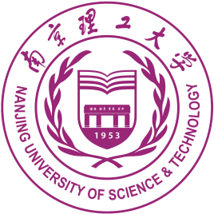

南京理工大学
南京理工大学，位于江苏省南京市，北依紫金山，西临明城墙，是隶属于工业和信息化部，由工信部、教育部与江苏省人民政府共建的全国重点大学，是国家"世界一流学科建设高校"，是国家"211工程"、"985工程优势学科创新平台"重点建设高校，入选国家"111计划"、卓越工程师教育培养计划、国家建设高水平大学公派研究生项目、新工科研究与实践项目、国家大学生创新性实验计划、国家大学生文化素质教育基地、国家创新人才培养示范基地、国家国际科技合作基地、中国政府奖学金来华留学生接收院校、全国创新创业典型经验高校、全国首批深化创新创业教育改革示范高校、全国高校实践育人创新创业基地、首批高等学校科技成果转化和技术转移基地、全国专利工作试点示范高校等，是全国18所获批国家双创示范基地的高校之一，全国首批博士、硕士学位授予单位，是中俄工科大学联盟、工业和信息化部高校联盟、B8协同创新联盟、CDIO工程教育联盟成员单位，素有"兵器技术人才摇篮"的美誉。
